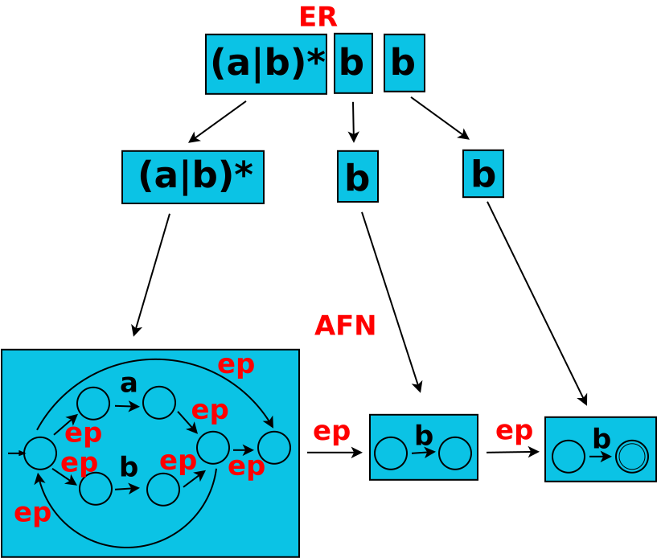
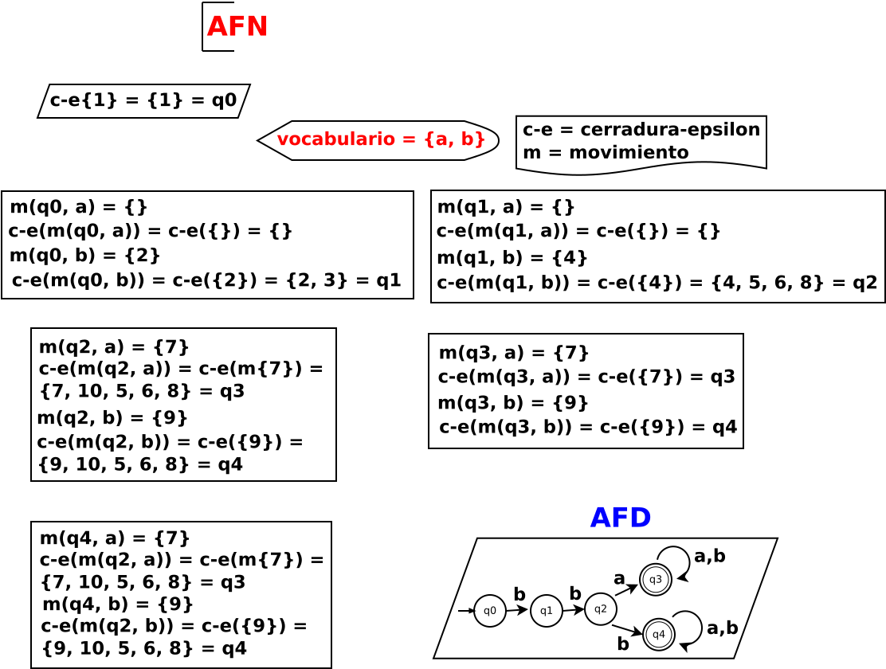
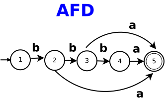
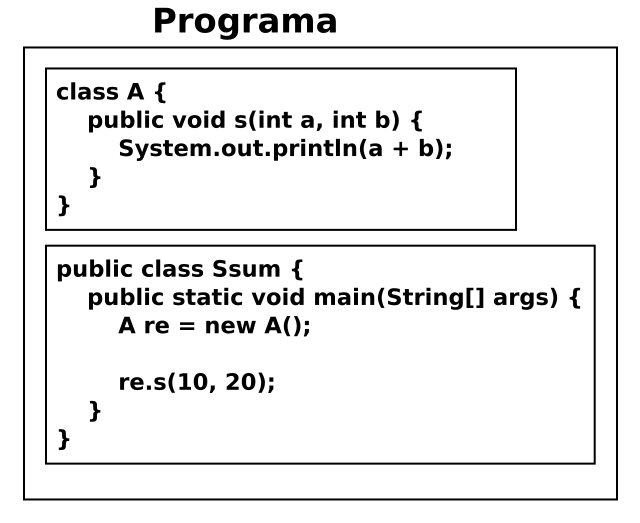

Cuestionario del primer parcial
Instrucciones. Lea con cuidado cada una de las preguntas. Contestar en una hoja de word cada una de las preguntas. Para después subir el archivo de word o puede estar en formato PDF, en el repositorio de classroom para Compiladores correspondiente al grupo 3CM15.
No comprimir los archivos, por favor.
Pregunta 1 1 punto
Proyecto. Obtener el AFN de la siguiente expresión regular:
(a|b)*bb
Solución a pregunta 1.
Pizarrón, archivo dia: SNCompiladores/C1P1marzo2023sol.dia

Pregunta 2 2 puntos
Proyecto. Obtener el AFD del siguiente AFN:
Pizarrón, archivo dia: SNCompiladores/C1P2marzo2023.dia

Solución a pregunta 2.
Pizarrón, archivo dia: SNCompiladores/C1P2marzo2023sol.dia

Pregunta 3 2 puntos
Proyecto. Obtener el AFD mínimo del siguiente AFD:
Pizarrón, archivo dia: SNCompiladores/C1P3marzo2023.dia

Solución a pregunta 3.
| δ | a | b |
|---|---|---|
| 1 | - | 2 |
| 2 | 5 | 3 |
| 3 | 5 | 4 |
| 4 | 5 | - |
| 5 | - | - |
Los grupos que se forman: G1 = {1, 2, 3, 4} de estados no finales y G2 = {5} grupos de estados finales.
| G1 | a | b |
|---|---|---|
| 1 | - | 2 |
| 2 | 5 | 3 |
| 3 | 5 | 4 |
| 4 | 5 | - |
Como no se cumple la continuidad en el grupo G1, el autómata AFD queda igual.
Pregunta 4 5 puntos
Proyecto. Obtener la tabla de transiciones para reconocer los tokens que aparecen en el siguiente código de entrada:
Pizarrón, archivo dia: SNCompiladores/AlAsEjercicio1.dia

Solución a pregunta 4.
Pizarrón, archivo dia: SNCompiladores/C1P4marzo2023sol.dia

Se muestran las tablas de transiciones de los tokens que aparecen en el código. La primera tabla es la de palabras clave:
| Tabla δ | c | l | a | s | p | u | b | i | v | o | d | e | s | t | n | w |
|---|---|---|---|---|---|---|---|---|---|---|---|---|---|---|---|---|
| q0 | q1 | - | - | - | q6 | - | - | q16 | q12 | - | - | - | q19 | - | q25 | - |
| q1 | - | q2 | - | - | - | - | - | - | - | - | - | - | - | - | - | - |
| q2 | - | - | q3 | - | - | - | - | - | - | - | - | - | - | - | - | - |
| q3 | - | - | - | q4 | - | - | - | - | - | - | - | - | - | - | - | - |
| q4 | - | - | - | q5 | - | - | - | - | - | - | - | - | - | - | - | - |
| q5 | - | - | - | - | - | - | - | - | - | - | - | - | - | - | - | - |
| q6 | - | - | - | - | - | q7 | - | - | - | - | - | - | - | - | - | - |
| q7 | - | - | - | - | - | - | q8 | - | - | - | - | - | - | - | - | - |
| q8 | - | q9 | - | - | - | - | - | - | - | - | - | - | - | - | - | - |
| q9 | - | - | - | - | - | - | - | q10 | - | - | - | - | - | - | - | - |
| q10 | q11 | - | - | - | - | - | - | - | - | - | - | - | - | - | - | - |
| q11 | - | - | - | - | - | - | - | - | - | - | - | - | - | - | - | - |
| q12 | - | - | - | - | - | - | - | - | - | q13 | - | - | - | - | - | - |
| q13 | - | - | - | - | - | - | - | q14 | - | - | - | - | - | - | - | - |
| q14 | - | - | - | - | - | - | - | - | - | - | q15 | - | - | - | - | - |
| q15 | - | - | - | - | - | - | - | - | - | - | - | - | - | - | - | - |
| q16 | - | - | - | - | - | - | - | - | - | - | - | - | - | - | q17 | - |
| q17 | - | - | - | - | - | - | - | - | - | - | - | - | - | q18 | - | - |
| q18 | - | - | - | - | - | - | - | - | - | - | - | - | - | - | - | - |
| q19 | - | - | - | - | - | - | - | - | - | - | - | - | - | q20 | - | - |
| q20 | - | - | q21 | - | - | - | - | - | - | - | - | - | - | - | - | - |
| q21 | - | - | - | - | - | - | - | - | - | - | - | - | - | q22 | - | - |
| q22 | - | - | - | - | - | - | - | q23 | - | - | - | - | - | - | - | - |
| q23 | q24 | - | - | - | - | - | - | - | - | - | - | - | - | - | - | - |
| q24 | - | - | - | - | - | - | - | - | - | - | - | - | - | - | - | - |
| q25 | - | - | - | - | - | - | - | - | - | - | - | q26 | - | - | - | - |
| q26 | - | - | - | - | - | - | - | - | - | - | - | - | - | - | - | q27 |
| q27 | - | - | - | - | - | - | - | - | - | - | - | - | - | - | - | - |
Tabla de transiciones para identificadores:
| tabla de δ | l | d |
|---|---|---|
| q0 | q1 | - |
| q1 | q1 | q1 |
Tabla de transiciones para delimitadores:
| tabla de δ | { | ( | [ | , | ; | . | ] | ) | } |
|---|---|---|---|---|---|---|---|---|---|
| q0 | q1 | q1 | q1 | q1 | q1 | q1 | q1 | q1 | q1 |
| q1 | - | - | - | - | - | - | - | - | - |
Tabla de transiciones para números:
| tabla de δ | d |
|---|---|
| q0 | q1 |
| q1 | q1 |
Tabla de transiciones para operadores:
| tabla de δ | + | = |
|---|---|---|
| q0 | q1 | q1 |
| q1 | - | - |